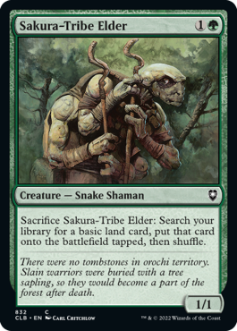
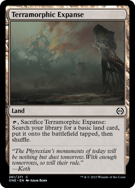
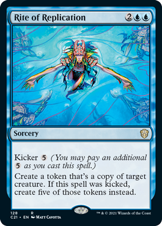

Combat tricks
Steven (Sakura-tribe elder) is a great card for this deck consept. He can get you lands early on and even into the late game as long as he isnt exiled. Some things you can do with him is dont use his ability right away. Wait untill your opponets are trying to attack you and block with him. Before damage is done then activate his ability to sacrafice himself to get a land into play. Unfortinitly this wont work if the attacking creature has trample but otherwise its a free block and you still get your lands into play.

Lands matter
Some lands that seem underwhelming at first are alot better when you can reuse them each turn with your commander on the board. Terramorphic expanse for example is one free land out of your deck per turn. making it so you allways hit your land drops and are on curve but also thining your deck out so you can draw less lands and more gas and bombs when needed.

Whats yours is mine
You could go with a more aggressive playstyle and just take your opponets stuff but its alot more interesting to picemeal a stratagy by copying what the best stuff on the board is for maximum value and fun. Because who is gana have fun when you keep stealing there 100 foot tall nuculear dinosaur and they cant have it when you could instead have 2 100 foot tall nuculear dinosaurs fight eachother. I know which i find to be more fun.